⚖️ Core Rule: Everything Costs Something
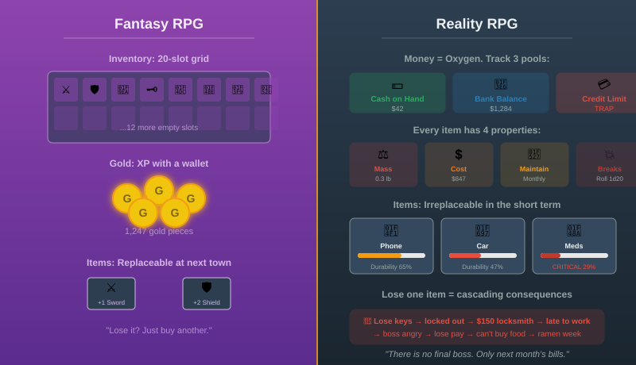
In most RPGs, inventory is a grid of slots and gold is XP with a wallet. In Reality RPG, every object you own has mass, cost, maintenance, and a probability of breaking. Money is not a resource you earn to spend on fun — it is the oxygen that keeps you alive. Running out of money is not a setback. It is the setback.
Characters track three financial pools:
- 💵 Cash on Hand — money physically on the character's person
- 🏦 Bank Balance — money in checking/savings accounts
- 💳 Available Credit — remaining credit card limit (a trap, not a treasure)
Unlike fantasy RPGs where a +1 Sword can be replaced at the next town, in reality your car, your phone, your keys, and your medications are irreplaceable in the short term. Losing them has cascading consequences that can last weeks or months.
Every character must track their inventory. Unlike fantasy where the GM waves away mundane items, in Reality RPG forgetting your wallet, running out of toilet paper, or having your car break down are not inconveniences — they are plot events. The economy system is not flavor text. It is the primary challenge of the game.
🎒 1. Inventory System
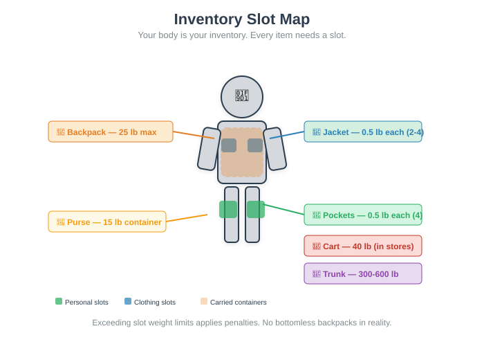
📍 Slot-Based Inventory
Characters do not have a bottomless backpack. They have physical slots determined by what they're wearing and carrying. Each slot can hold items up to a weight limit. Exceeding the limit applies penalties.
Pockets (jeans/pants)
0.5 lb each · 4 slots
Front and back pockets. Phone in back pocket = discomfort penalty.
Jacket Pockets
0.5 lb each · 2–4 slots
Depends on jacket type. Hoodie = 2 pockets. Winter coat = 4.
Purse / Crossbody Bag
15 lb · 1 container
Many sub-compartments. Organization matters — searching takes time.
Backpack
25 lb (comfortable) · 1 container
Can carry more but beyond 25 lb, −1 to all physical rolls per 5 lb over.
Shopping Cart
40 lb · 1 container
Only available at stores. Abandoning a cart in a parking lot = social penalty.
Vehicle Trunk
300–600 lb · 1 container
Available only if character owns/has access to a vehicle.
⚖️ Encumbrance Rules
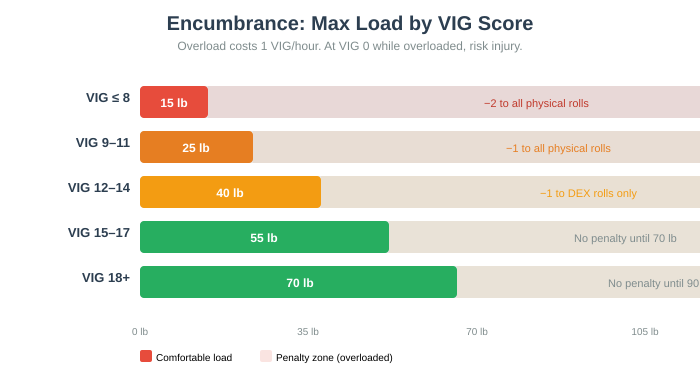
Real-world carrying capacity matters. A character's maximum comfortable load is determined by their VIG score and body type:
| VIG Score | Max Comfortable Load | Load Bar | Penalty When Overloaded |
|---|---|---|---|
| 8 or below | 15 lb | −2 to all physical rolls | |
| 9–11 | 25 lb | −1 to all physical rolls | |
| 12–14 | 40 lb | −1 to DEX-based rolls only | |
| 15–17 | 55 lb | No penalty until 70 lb | |
| 18+ | 70 lb | No penalty until 90 lb |
Being overloaded also costs 1 VIG per hour of carrying the excess weight. If a character's VIG reaches 0 while overloaded, they must set something down or risk injury (roll 1d20; on 1–5, they drop everything and may sprain something).
😱 The Forgot-Something Penalty
Forgetting essential items is a common and devastating failure mode. At the start of each day, the GM may call for a Morning Routine Check:
| Item Forgotten | Roll | Immediate Consequence | Cascade Effect |
|---|---|---|---|
| 🔑 Keys | 1d20; on 1–3 | Locked out of home/car. Must call locksmith ($89–$250) or wait for housemate. | 4–6 hours lost. May miss work → Boss Relationship −1. |
| 👛 Wallet | 1d20; on 1–4 | Cannot pay for anything. No ID, no cards, no cash. | If at work: cannot buy lunch. If at store: must abandon cart. Social humiliation. |
| 📱 Phone | 1d20; on 1–3 | No communication, no maps, no mobile banking, no 2FA. | Cannot receive work calls. May miss emergency. Modern life nearly impossible without it. |
| 🧻 Toilet Paper | Check inventory at start of day | Must improvise. Washcloth, paper towels, or the dreaded "dry method." | −2 to Mood Score for the day. If TP has been gone >3 days, roll 1d20; on 1, character develops a health issue requiring a doctor visit. |
| 💊 Medications | 1d20; on 1–4 (if on prescription) | Missed dose. Effects depend on medication type. | Insulin missed = possible emergency (roll 1d20; on 1–6, go to ER). Blood pressure meds missed = +2 SP + health risk next week. |
| 🪪 ID / Driver's License | 1d20; on 1–4 | Cannot enter age-restricted places, cannot get cash from ATM, cannot board planes. | If stopped by police without ID: possible detention. Lost time: 2–8 hours. |
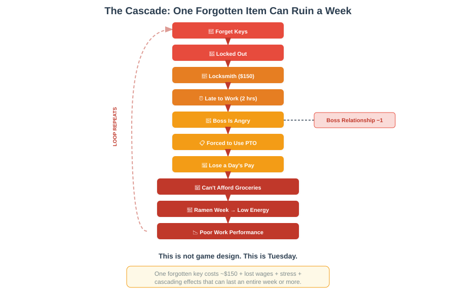
Forget your keys → locked out → call locksmith ($150) → arrive at work 2 hours late → boss is angry → forced to use PTO → lose a day's pay → can't afford groceries → eating ramen for a week → low energy → poor work performance → Boss Relationship drops further. This is not game design. This is Tuesday.
📋 2. Essential Items Catalog
Every character starts with a set of essential items based on their background. The GM assigns starting gear according to the character's Socioeconomic Tier (see character creation). Below is a comprehensive catalog of costs for reference.
👤 Personal Essentials
| Item | Cost Range | Lifespan | Replacement Frequency | Notes |
|---|---|---|---|---|
| 📱 Smartphone | $200–$1,200 | 3–5 years | Every 3–5 years | Cheaper phones break faster. Carrier plans add $30–$85/month. |
| 🔑 Key Set (home, car, work) | $5–$30 | Indefinite | When lost or lock changed | Spare keys = $5–$15 each. Key fob for car = $100–$400. |
| 👛 Wallet | $10–$100 | 2–5 years | Wears out; leather cracks | Free wallet from a brand = social penalty (known by everyone). |
| 🪪 ID / Driver's License | $0–$60 | 4–8 years | Renew every 4–8 years | Replacement after loss = $10–$40 + time at DMV. |
| 💊 Prescription Medications | $0–$500/month | Ongoing | Monthly refills | Generic = cheap. Brand = expensive. No insurance = catastrophic. |
| 🧴 Toiletries (soap, toothpaste, deodorant) | $15–$60/month | 1–3 months per item | Monthly grocery run | Bulk buying saves ~30%. Organic/natural = +50% cost. |
| 🧻 Toilet Paper | $3–$15 per pack | 1–4 weeks | Weekly to monthly | Runs out faster than you think. Always buy extra. Always. |
👕 Clothing
| Category | Budget Tier | Mid Tier | Premium Tier | Notes |
|---|---|---|---|---|
| 👔 Work Clothes (full outfit) | $50–$150 | $200–$500 | $600–$2,000 | Office job? You need at least 3 changes for the week. |
| 👟 Shoes | $25–$60 | $80–$150 | $200–$400 | Work shoes last 1–2 years. Running shoes: 6 months with use. |
| 🧥 Seasonal Wardrobe (winter/summer) | $100–$300 per season | $400–$800 | $1,000–$3,000 | Need at least 2 seasonal sets minimum. |
| 🏋️ Gym Clothes | $30–$80 | $100–$250 | $300–$600 | Optional unless character exercises regularly. |
| 🎩 Situational (wedding, interview, funeral) | $0 (borrow) | $100–$300 | $500+ | One outfit that works for all three is ideal. |
Characters need at least 7–10 complete outfits for a week without doing laundry. Fewer outfits = laundry every 2–3 days = time cost. More outfits = closet space needed = larger (more expensive) housing.
Most characters underestimate how much clothing costs. A full wardrobe for all seasons, including work-appropriate attire, easily runs $800–$2,000 per year for a mid-tier character. This is before shoes, before accessories, before replacing worn items. Track clothing wear: each month, roll 1d20; on a 1, an item wears out and needs replacement.
🛒 Food
| Quality Tier | Weekly Cost (1 person) | Monthly Cost | What You Eat |
|---|---|---|---|
| 🥫 Bare Minimum | $25–$40 | $100–$160 | Ramen, bread, peanut butter, rice, canned beans. Survival nutrition. |
| 🥪 Budget | $40–$65 | $160–$260 | Basic groceries. Some fresh produce. Occasional frozen meals. |
| 🥗 Standard | $65–$100 | $260–$400 | Balanced diet. Fresh meat, vegetables, fruit. Some name brands. |
| 🥩 Quality | $100–$160 | $400–$640 | Organic options, seafood, specialty items. Farmers market visits. |
| 🍽️ Premium | $160+ | $640+ | Artisanal, imported, dietary-specific. Whole Foods on steroids. |
🍽️ Restaurant Costs (Per Meal)
| Establishment Type | Cost Range | Time Investment |
|---|---|---|
| 🍔 Fast Food | $5–$12 | 10–15 min (including wait) |
| 🥡 Fast Casual (Chipotle, Sweetgreen) | $12–$18 | 15–25 min |
| 🍝 Casual Restaurant | $18–$35 | 45–75 min |
| 🥂 Nice Restaurant | $40–$80 | 1.5–2.5 hours |
| 🌟 Fine Dining | $80–$200+ | 2–4 hours |
Eating out 3 times per week at casual restaurants costs $216–$420/month — more than the entire grocery budget for a Standard tier character. This is why eating out is a luxury, not a habit, for most people.
🏠 Housing
| Tier | Monthly Rent | Security Deposit | Typical Space | Location |
|---|---|---|---|---|
| 🏚️ Substandard | $400–$700 | 1 month | Room in shared house, basement unit | High-crime area, poor maintenance |
| 🏢 Low-Income | $700–$1,200 | 1 month | Studio or 1BR in older building | Outer suburbs, declining neighborhoods |
| 🏠 Standard | $1,200–$2,200 | 1–2 months | 1BR or 2BR apartment | Middle neighborhoods, decent transit |
| 🏡 Comfortable | $2,200–$4,000 | 1–2 months | 2BR–3BR, newer building, amenities | Good neighborhoods, near downtown |
| 🏙️ Premium | $4,000–$8,000+ | 2–3 months | Luxury apartment, condo, or house | Top neighborhoods, city center |
💡 Utilities & Monthly Fixed Costs
| Utility | Monthly Cost | Notes |
|---|---|---|
| 💡 Electricity | $50–$200 | Higher in summer (AC) and winter (heat). Electric heating = expensive. |
| 🌊 Water/Sewer | $30–$80 | Usually included in rent for apartments. Owners pay full. |
| 🔥 Gas/Heating | $30–$150 | Seasonal. Winter = higher. Some apartments include this. |
| 📶 Internet | $40–$80 | Non-negotiable in 2025. Work from home? You need fast. |
| 📱 Phone Plan | $30–$85 | Prepaid = cheaper. Unlimited data = more expensive. |
| 📺 Streaming/Entertainment | $15–$60 | Netflix, Spotify, etc. Optional but socially expected. |
| 🏢 HOA Fees | $100–$400 | If in condo/HOA community. Mandatory. No opting out. |
🚗 Transportation
| Option | Upfront Cost | Monthly Cost | Annual Cost | Notes |
|---|---|---|---|---|
| 🚗 Car Purchase (used, reliable) | $5,000–$15,000 | — | — | Can also finance: $200–$500/month for 48–72 months |
| 🚗 Car Purchase (new) | $30,000–$50,000+ | — | — | Financing: $400–$800/month. Depreciates 20% year one. |
| ⛽ Gas | — | $100–$300 | $1,200–$3,600 | Depends on commute distance. EV = electricity instead. |
| 🔧 Car Maintenance | — | $50–$150 avg | $600–$1,800 | Oil changes, tires, brakes, unexpected repairs |
| 🅿️ Parking | — | $50–$300 | $600–$3,600 | City parking is expensive. Street parking = stress. |
| 🚌 Public Transit Pass | — | $70–$130 | $840–$1,560 | Monthly pass. Cheaper than owning a car in cities. |
| 🚲 Bicycle | $100–$2,000 | $5–$20 | $60–$240 | Cheapest option. Weather-dependent. Theft risk. |
🏥 Healthcare
| Category | Monthly Cost | Annual Cost | Notes |
|---|---|---|---|
| 🏥 Insurance Premium (employer-subsidized) | $100–$400 | $1,200–$4,800 | Deductible still $1,000–$6,000/year. Premium is NOT the full cost. |
| 🏥 Insurance Premium (individual market) | $300–$800 | $3,600–$9,600 | ACA marketplace. Subsidies may reduce this dramatically. |
| 👨⚕️ Primary Care Visit | — | $20–$50 copay | After deductible met: 10–20% of $150–$250 visit cost. |
| 🚑 ER Visit | — | $500–$10,000+ | Even with insurance. Ambulance alone: $500–$3,000. |
| 💊 Prescriptions (generic) | $5–$50/month | $60–$600 | Brand name: $100–$500+/month. Some drugs = $1,000+/month. |
| 🦷 Dental (cleaning + checkup) | — | $0–$100 copay | Major dental work: $500–$5,000 (crowns, root canals, implants) |
| 👁️ Vision (eye exam + glasses) | — | $50–$400 | Contacts: +$100–$300/year. LASIK: $2,000–$4,000 one-time. |
| 🧠 Mental Health (therapy) | $0–$100 copay | $0–$1,200 | Out-of-network: $100–$250/session. Many have limited sessions/year. |
One unexpected medical event can wipe out a character's entire savings. A broken bone: $3,000–$15,000. An appendectomy: $10,000–$50,000. Chronic illness management: $500–$3,000/month indefinitely. Health insurance is not optional. Characters without health insurance should roll 1d20 at the start of each month; on a 1–4, a health event occurs.
💰 3. Money Management

🏦 Bank Accounts
Characters typically have at least two accounts:
- Checking Account — daily spending, bill payments, direct deposit. Usually earns 0% interest.
- Savings Account — emergency fund, future purchases. Earns 0.5–5% APY depending on bank.
- Money Market / CD (optional) — higher interest but harder to access. For longer-term savings.
Overdraft Protection costs $10–$35 per occurrence. Forgetting a bill payment and going into overdraft is a real and common way to lose money. Characters with a history of overdrafts should track an Overdraft Risk score:
>$500 above
No roll needed
$100–$500
Roll 1 = $30
$0–$100
Roll 1–4 = $30
Below min
Roll 1–8 = $30+
💳 Credit Cards
Credit cards are a double-edged sword. They build credit history (necessary for apartments, car loans, even some jobs) but carry devastating interest rates.
| Factor | Details |
|---|---|
| 💰 Typical APR | 15–25% on purchases. 25–30% on cash advances. 0% intro offers last 12–18 months. |
| 📉 Minimum Payment | 1–3% of balance + interest. Paying only the minimum on a $5,000 balance at 20% APR takes 32 years to pay off, costing $15,000+ in interest. |
| 📅 Annual Fees | $0–$550 for premium cards. Reward cards charge fees but offer cashback/points. |
| 📊 Credit Score Impact | Utilization >30% of limit = credit score drops. Maxing out cards = major score damage. |
Diego puts a $1,200 car repair on his credit card (APR 22%). He can only afford the minimum payment of ~$35/month. After 1 year: he's paid $420 in payments but only reduced the balance to $1,003. After 3 years: he's paid $1,260 and still owes $642. After 5 years: he's paid $2,100 total for a $1,200 repair. The card charged him $900 in interest.

📊 Budgeting As A Mechanic

Budgeting is not optional. Characters who actively budget gain mechanical benefits:
- Budget Score (BS): Track on a scale of 0–100. Starts at 50 for most characters.
- Each month, the character's income and expenses shift their BS.
- BS > 70 = financial comfort. BS 40–70 = stable. BS 20–40 = stressed. BS < 20 = crisis.
- Characters with BS > 60 gain +5 to stress resistance checks. BS < 30 imposes −5 to stress resistance.
🚨 Emergency Fund
An emergency fund is the single most important financial tool a character can have. It is 3–6 months of essential expenses saved in a separate account.
Immune to crises
+10 BS
Most events OK
+5 BS
Vulnerable
No mod
Crisis mode
−5 BS, −2 mood
Paycheck to paycheck
−10 BS, −3 mood
💀 Bankruptcy Risk
When a character's Budget Score drops below 10 for 3+ consecutive months, they enter Financial Freefall. Each month in freefall, roll 1d20:
After 6 months in Financial Freefall, the GM should offer the character a path to stabilization — but it will require roleplay sacrifice (moving in with family, taking a second job, cutting all discretionary spending, etc.).
📅 4. Monthly Budget Simulation
💡 Sample Budget: "Sarah" — 28, Office Worker, Standard Tier

Income: $4,200/month (after taxes)
| Expense | Monthly | % Income |
|---|---|---|
| 🏠 Rent (1BR apartment) | $1,500 | 36% |
| 💡 Utilities (electric, water, gas) | $120 | 3% |
| 📶 Internet | $60 | 1% |
| 📱 Phone Plan | $55 | 1% |
| 🏥 Health Insurance (employer) | $180 | 4% |
| 🚗 Car Payment | $280 | 7% |
| 🚗 Car Insurance | $120 | 3% |
| ⛽ Gas | $130 | 3% |
| 🛒 Groceries | $350 | 8% |
| 🍽️ Eating Out (2x/week) | $120 | 3% |
| 💊 Medications | $25 | 1% |
| 🧴 Toiletries/Personal | $40 | 1% |
| 👕 Clothing (averaged) | $50 | 1% |
| 🎬 Entertainment | $60 | 1% |
| 🎁 Gifts/Occasional | $40 | 1% |
| 📋 Miscellaneous | $50 | 1% |
| 💰 Savings | $300 | 7% |
| Total | $4,380 | 104% |
Deficit: −$180/month. Sarah is already over budget. She's either dipping into savings, using credit, or cutting somewhere not shown. After 3 months, she's $540 in the hole. After a year, $2,160.
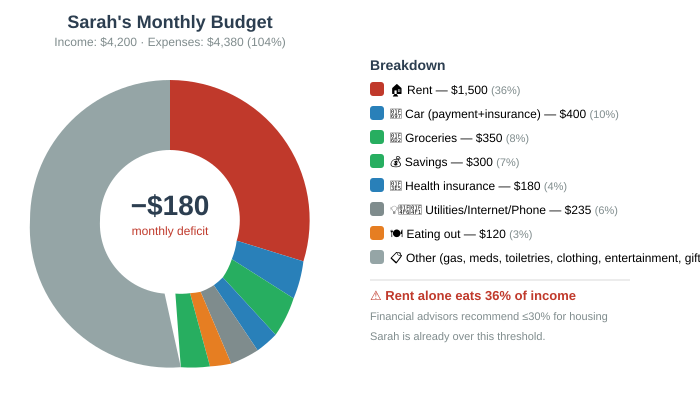
🔥 What Happens When You're Over Budget
$50–$150
Savings absorb
$150–$400
BS −5/mo
$400–$800
BS −10/mo
$800+
BS −15/mo
Freefall risk
Financial influencers love saying "skip the $5 latte and you'll save $600/year." This is insulting and wrong. The real budget killers are rent, healthcare, transportation, and debt payments — three items that consume 60–80% of most people's income. Saving $5 on coffee while paying $1,500 in rent is like bailing out the Titanic with a teaspoon. Characters who focus on small savings while ignoring structural costs are setting themselves up for failure.
💡 Budget Improvement Strategies
Characters can take actions to improve their budget. Each takes time and effort:
| Action | Time Investment | Monthly Savings | Difficulty |
|---|---|---|---|
| 🏠 Move to cheaper housing | 2–4 weeks (search + move) | $200–$600 | High — may mean worse location/conditions |
| 💼 Get a raise or new job | 1–3 months | $200–$1,000+ | Very high — requires skill checks, interview checks |
| 🍳 Cook more at home | Ongoing (1–2 hrs/day) | $100–$300 | Medium — requires Cooking skill |
| 🚌 Use public transit instead of car | 1 day (sell car, get pass) | $300–$600 | Medium — may limit job/housing options |
| 💳 Refinance high-interest debt | 1–2 weeks | $50–$200 | Medium — requires good credit score |
| 🎬 Cut entertainment spending | Immediate | $30–$100 | Easy but increases Stress Points |
🛍️ 5. Shopping and Consumption
🎮 Shopping As Gameplay
Shopping is not a cutscene. It is a mechanic with time costs, budget constraints, and decision trees. Every shopping trip requires:
- Time: 30 minutes to 4 hours depending on what's being bought and where
- Budget: the character must have the money available
- Research: comparing prices, reading reviews, checking quality
- Transportation: getting to the store (or waiting for delivery)
Price Comparison Mechanic
When a character wants to buy something, the GM sets a Target Price based on the item's typical cost. The character can attempt to find a better deal:
| Strategy | Time Cost | Potential Savings | Roll |
|---|---|---|---|
| 🏪 Buy at first store | 0 extra | 0% | None — full price |
| 🔍 Check 2–3 stores | 30–60 min | 5–15% | 1d20; on 10+, find better price |
| 💻 Online price comparison | 15–30 min | 10–25% | 1d20 + INT modifier; on 10+, find best deal |
| 🎫 Use coupons/sales | 1–2 hrs prep | 15–50% | 1d20; on 12+, find valid coupon. On 16+, stack deals. |
| 📦 Buy used/refurbished | 2–4 hrs | 30–70% | 1d20; on 1–5, buy a lemon (broken item, lose money) |
| 🏭 Buy generic/store brand | 0 extra | 20–40% | Quality may be lower: roll 1d20; on 1–4, product is inferior |
Alex needs a new laptop. Options:
- Budget path: Buy a used laptop for $200. Takes 3 hours of searching. Roll 1d20 = 14 — found a decent one! But it only lasts 1 year before problems start. Total cost over 2 years: $400 (need to replace).
- Mid path: Buy a refurbished business laptop for $450. Takes 2 hours of research. Lasts 3 years. Better value long-term.
- Premium path: Buy a new laptop for $900. Takes 20 minutes. Lasts 4–5 years. But Alex needed to use a credit card and can't pay it off immediately. Interest charges add $150 over 18 months. Total cost: $1,050.
The "best" option depends entirely on Alex's current financial situation.
⏰ The Time Cost of Saving Money
This is a core Reality RPG principle: time has value. Spending 4 hours to save $20 on groceries costs the character:
- 4 hours of their day (less sleep, less leisure, less time with loved ones)
- If they earn $15/hr, those 4 hours are worth $60 in potential income
- Mental fatigue from decision-making (−1 to Mood Score per hour of intense shopping)
Characters must weigh: Is saving $20 worth 4 hours of my life? The answer changes depending on whether the character is wealthy, middle-class, or living paycheck to paycheck.
Use shopping trips to reveal character priorities. A character who spends 2 hours comparing mattress prices but buys the cheapest phone plan is making a statement about what they value. A character who impulse-buys expensive shoes while behind on rent is showing a flaw that the story can explore.
📉 6. Resource Depletion
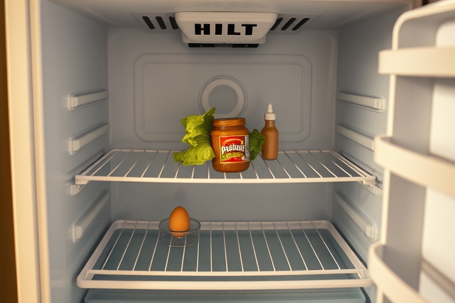
⏳ Everything Runs Out
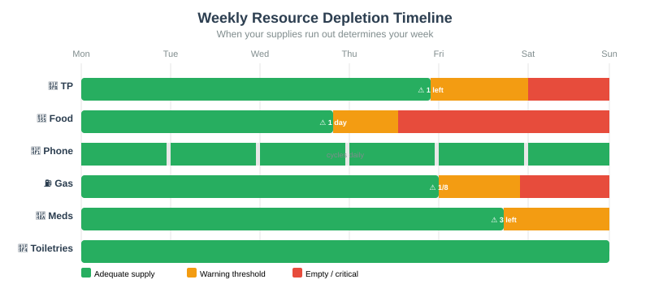
In fantasy RPGs, a character can eat a ration for 40 years. In Reality RPG, consumables deplete at realistic rates. Characters should track the status of key consumables:
| Resource | Depletion Rate | Warning Threshold | Consequence of Running Out |
|---|---|---|---|
| 🧻 Toilet Paper | 1 roll per 2–7 days | 1 roll left | Discomfort, hygiene issues, trip to store urgently |
| 🍕 Food | 3 meals/day | 1 day of food left | Hunger penalties: −1 to all rolls. After 3 days: −2, lose 1 VIG/day |
| 📱 Phone Battery | 1 charge/day (heavy use: 2x/day) | 20% battery | Cannot call, text, or navigate. In emergency: catastrophic. |
| ⛽ Gas Tank | Depends on driving | 1/8 tank | Running out = stranded. Tow: $75–$200. If in remote area: danger. |
| 💊 Prescription Medications | Per prescription schedule | 3 doses left | Missed doses: health effects vary. Insulin: possible emergency. |
| 🧴 Toiletries | 1–3 months per item | Almost empty | Cannot maintain hygiene. Hygiene Score drops. Social penalties. |
| 🧊 Ice (for cooler/medical) | Melts in hours | Half gone | Spoiled food, lost medications if temperature-sensitive |
| 🔋 Batteries (remotes, smoke detector) | 6–18 months | Low battery warning | Smoke detector with dead battery = fire risk. Roll 1d20 monthly; on 1, fire event. |
🍎 Food Spoilage
Fresh food doesn't last forever. Characters who buy in bulk risk waste:
| Food Type | Shelf Life (Refrigerated) | Shelf Life (Pantry) | Waste Risk |
|---|---|---|---|
| 🥬 Fresh vegetables | 3–7 days | Root veg: 2–4 weeks | 🔴 High — 40% of purchased produce is wasted |
| 🍎 Fresh fruit | 5–10 days | Citrus: 2–3 weeks | 🟡 Medium |
| 🥩 Raw meat | 1–3 days | Frozen: 3–6 months | 🔴 High — must cook or freeze quickly |
| 🥛 Dairy | 5–14 days | Hard cheese: 3–4 weeks | 🟡 Medium |
| 🍚 Rice, pasta, canned goods | N/A | 6–24 months | 🟢 Low — staple foods don't spoil quickly |
| 🍞 Bread | 3–5 days | Frozen: 3 months | 🔴 High — molds fast |

Maya buys $80 of groceries on Sunday, excited to cook healthy all week. By Wednesday, she's working late and orders take-out ($22) instead of cooking. By Friday, half the fresh produce has spoiled because she didn't meal-plan. She threw away $25 of food. Her effective grocery cost for the week is now $77 ($80 − $25 waste + $22 take-out), and she still didn't eat as well as planned. Meal planning is a mechanic, not a suggestion.
🔧 7. Breaking Things
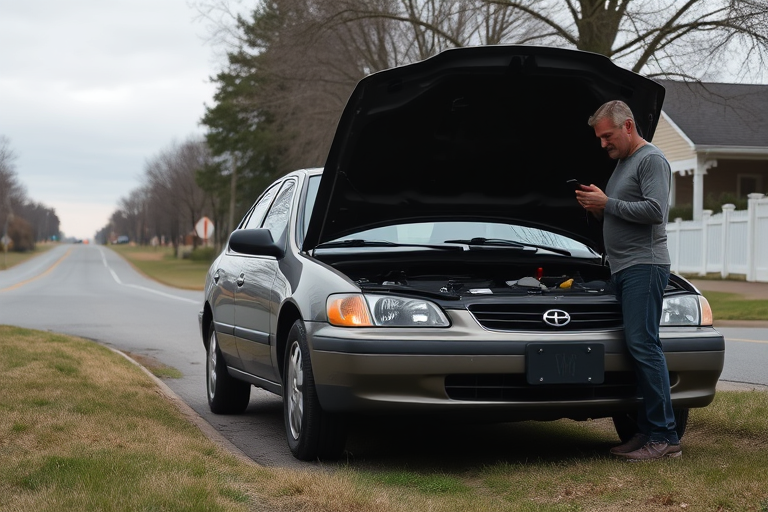
💥 Everything Breaks Eventually
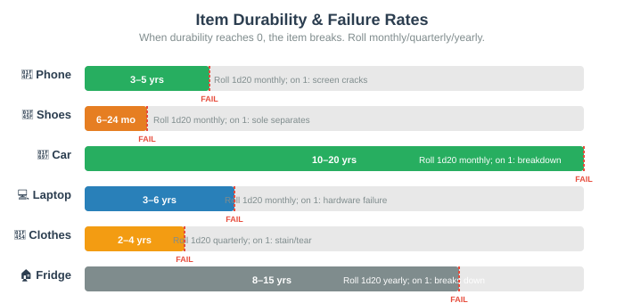
In Reality RPG, objects are not immortal. Every owned item has a Durability Score that degrades over time. When an item's durability reaches 0, it breaks. The GM determines when to roll for item failure:
| Item | Average Lifespan | Failure Roll | Repair Cost | Replacement Cost |
|---|---|---|---|---|
| 📱 Phone | 3–5 years | 1d20 monthly; on 1, screen cracks or battery degrades | $50–$300 (screen) | $200–$1,200 |
| 👟 Shoes | 6–24 months | 1d20 monthly; on 1, sole separates or tread wears through | $10–$30 (resole) | $25–$200 |
| 🚗 Car | 10–20 years | 1d20 monthly; on 1, breakdown ($100–$2,000 repair) | $50–$5,000+ | $5,000–$50,000 |
| 👔 Work Clothes | 2–4 years | 1d20 quarterly; on 1, stain, tear, or pill beyond repair | $5–$30 (tailor) | $20–$200 |
| 🛋️ Furniture | 5–15 years | 1d20 yearly; on 1, structural failure | $50–$500 | $100–$3,000 |
| 💻 Laptop | 3–6 years | 1d20 monthly; on 1, hardware failure | $100–$600 | $400–$2,000 |
| 🏠 Appliances (fridge, washer, etc.) | 8–15 years | 1d20 yearly; on 1, breaks down | $100–$600 | $300–$2,000 |
| 🔑 Keys | Indefinite | 1d20 yearly; on 1, lost | $5–$30 (duplicate) | $5–$30 |
🔨 Repair vs. Replace Decisions
When something breaks, the character faces a real decision:
🔧 Repair Favored
| Cost ratio | Repair < 50% of replacement |
| Age of item | Newer (< 50% of lifespan) |
| Time available | Can wait for repair |
| Sentimental value | Heirloom, gift, emotional attachment |
| Reliability | Will be "good as new" |
🔄 Replace Favored
| Cost ratio | Repair > 70% of replacement |
| Age of item | Old (> 75% of lifespan) |
| Time available | Need it immediately |
| Sentimental value | No attachment, purely functional |
| Reliability | May break again soon |

Carlos's 2012 Honda Civic (current value: $4,500) needs a new transmission. Repair quote: $3,200. A used replacement car: $8,000–$12,000 plus insurance, registration, gas for a bigger car.
Repair path: Spends $3,200 (uses credit card, 18 months to pay off). Car probably lasts 3 more years. Total 3-year cost: $3,200 repair + $3,600 interest + $4,800 insurance/gas = $11,600.
Replace path: Buys $10,000 car. Financing: $350/month × 60 months = $21,000 total. Plus insurance increase: +$80/month = $4,800 over 5 years. Total 5-year cost: $25,800.
There is no good option. This is the reality of car ownership.
🛡️ 8. Insurance
📋 The Insurance Landscape
Insurance is money you pay hoping you never get back. But not having it is financial suicide. Every character needs to understand the insurance matrix:
Health Insurance
$100–$800/mo · $1,200–$9,600/yr
Covers: doctor visits, hospital stays, prescriptions (partially).
Excludes: deductible ($1K–$6K), out-of-network, cosmetic.
Auto Insurance
$80–$300/mo · $960–$3,600/yr
Covers: accident damage, liability, theft.
Excludes: normal wear, mechanical failure.
Renter's Insurance
$10–$30/mo · $120–$360/yr
Covers: personal property, liability, temporary housing.
Excludes: floods, earthquakes, pre-existing damage.
Homeowner's Insurance
$100–$300/mo · $1,200–$3,600/yr
Covers: structure, personal property, liability.
Excludes: floods, earthquakes, maintenance issues.
Life Insurance
$10–$100/mo · $120–$1,200/yr
Covers: death benefit for beneficiaries.
Excludes: self, suicide within 2 years, high-risk activities.
Dental Insurance
$15–$50/mo · $180–$600/yr
Covers: cleanings, basic procedures (up to max).
Excludes: cosmetic, annual max ($1K–$2K), major work.
Vision Insurance
$5–$15/mo · $60–$180/yr
Covers: eye exams, partial glasses/contacts discount.
Excludes: usually saves less than it costs. Often not worth it.
Umbrella Policy
$15–$40/mo · $180–$480/yr
Covers: extra liability above other policies.
Excludes: intentional acts, business activities, property damage.
📝 Filing a Claim
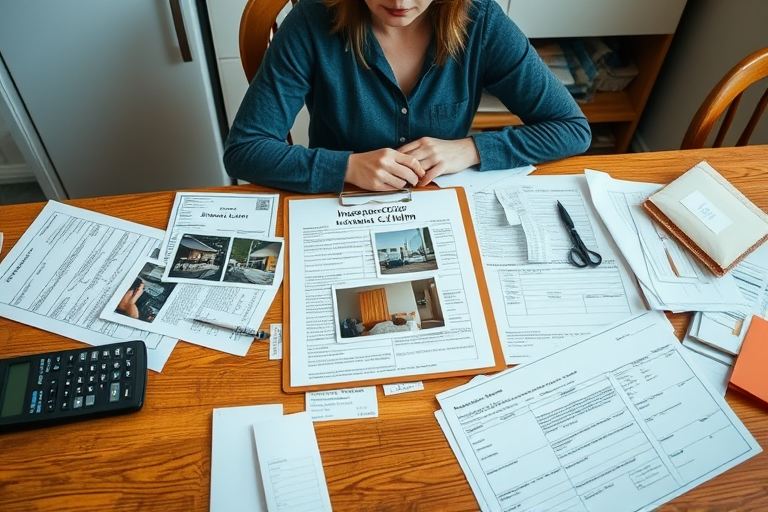
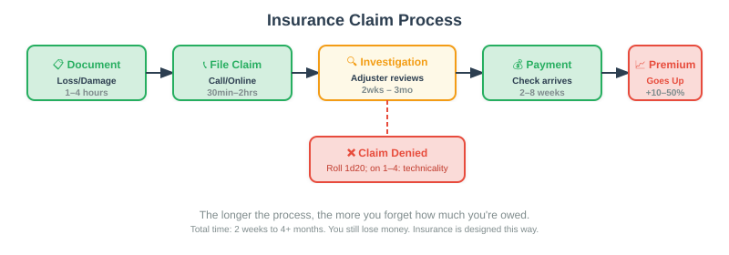
Getting money back from insurance is not automatic. Filing a claim is a process with its own challenges:
| Step | Time Required | Difficulty | Roll |
|---|---|---|---|
| 📋 Document the loss/damage | 1–4 hours | Medium | 1d20 + INT; on failure, documentation is insufficient |
| 📞 File the claim | 30 min–2 hours | Low | Usually straightforward but may require phone calls |
| 🔍 Insurance investigation | 2 weeks–3 months | — | GM-controlled. May deny claim on technicality (roll 1d20; on 1–4, denied) |
| 💰 Receive payment | 2–8 weeks after approval | — | Usually paid, but often less than expected (deductible, depreciation) |
| 📈 Premium increase | Automatic | — | Filing a claim = +10–50% premium increase for 3–5 years |
Insurance is the most frustrating financial product in existence. You pay every month hoping never to use it. If you use it, your premiums go up. If you don't use it, you feel like you "wasted" the money. If you try to cancel it and then need it, you face catastrophic costs. The rational choice is to always have insurance. The emotional experience is constant resentment. This is by design.
Jamal's apartment building has a pipe burst on the 3rd floor. Water damages his belongings: a laptop ($800), clothes ($300), and furniture ($500) = $1,600 total loss. He has renter's insurance with a $500 deductible and a $10,000 policy limit.
Process: He files a claim. The adjuster visits (2 weeks later). They determine the laptop is "depreciated" (it's 3 years old) and only value it at $400. Some clothes are "normal wear" and not covered. Final settlement: $700 − $500 deductible = $200 check.
He lost $1,600 in belongings and received $200. His premium goes up $15/month for the next 3 years ($540 total increase). Net result: he lost $1,940. Insurance did not save him. This is normal.
📊 Combined Inventory & Budget Tracker
Characters should maintain a combined tracker. Here's a recommended format:

🧻 Toilet Paper
3 rolls left · 3 days
🔴 Critical

🍕 Food
2 days left · Tomorrow
🔴 Critical

💊 Medications
10 days left
🔴 Critical

📱 Phone
Working · 70% battery
🟡 Important
⛽ Gas
1/2 tank · ~1 week
🟡 Important

👕 Clothes
5 clean outfits
🟢 Normal
In fantasy RPGs, the challenge is excess — too many enemies, too much danger, too many treasures. In Reality RPG, the challenge is scarcity — not enough money, not enough time, not enough resources, not enough sleep. Every system on this page interacts with every other system. Running out of toilet paper (§6) means a trip to the store, which costs gas (§6), which costs money (§3), which affects your budget (§4), which increases stress (Mental Health), which affects your work performance (Daily Life), which could cost you your job. This chain reaction IS the game. There is no final boss. There is only next month's bills.